리눅스마스터-1급 (2008-08-31 기출문제)
1과목: 리눅스 실무의 이해
1. 다음 중 리눅스 운영체제의 특징으로 틀린 것은?
- 다중 사용자, 다중 처리 시스템을 지원하는 안정적인 시스템이다.
- EXT2, EXT3 등의 다양한 파일 시스템을 지원 하지만 MS 윈도우의 NTFS는 지원하지 않는다.
- 다양한 업무 환경을 만족시키는 다양한 배포판이 존재한다.
- Unix 기반의 운영체제 중 가장 많은 수의 하드웨어를 지원한다.
(정답률: 63%)

2. 다음의 운영체제와 관련된 설명 중 알맞은 것은?
- 쉘은 명령을 해석하여 커널에 전달하는 역할을 담당한다.
- 시스템 자원의 효과적인 관리를 위해 스케줄링은 응용 프로그램에서 담당한다.
- 디바이스 드라이버는 운영체제의 구성요소라고 보기 어렵다.
- 운영체제는 실시간성을 항상 보장한다
(정답률: 70%)
3. 다음 메모리 세그먼트에 대한 설명 중 틀린 것은?
- x86 메모리 아키텍쳐에서 CPU가 사용하는 주소 변환 기법 중에 하나이다.
- 세그먼트의 크기는 가변적이다.
- 세그먼티드 주소는 세그먼트 셀렉터와 오프셋으로 구성된다.
- 세그먼트 오프셋이 세그먼트의 길이를 초과하면 커널은 심각한 오류를 발생한다.
(정답률: 52%)
4. 리눅스 커널 2.6의 특징이 아닌 것은?
- 선점형 스케줄링 방식이 도입되었다.
- 블록 장치는 16TB의 크기가 한계이다.
- NTFS에 대한 안정적 쓰기가 가능하게 되었다.
- 32bit의 UID를 도입하였다.
(정답률: 22%)
5. 다음 중 용어에 대한 정의가 적절하지 않은 것은?
- 서브루틴 : 다른 프로그램의 호출에 의해 실행되는 명령의 집합
- 컴파일러 : 고급언어로 작성된 프로그램을 기계어로 번역하는 프로그램
- 로더 : 메모리의 효율적인 관리를 위해 스케줄링을 담당하는 프로그램
- 매크로 : 반복 호출 되는 코드에 대하여 미리 정의한 코드
(정답률: 64%)
6. 다음 부트로더 GRUB 설정파일에 대한 설명으로 틀린 것은?
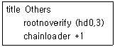
- 네 번째 파티션의 첫 번째 섹터를 로드한다.
- 해당 파티션은 특수 파티션으로 점검 없이 마운트 하도록 한다.
- 시스템에 설치된 첫 번째 하드 디스크에 접근 한다.
- 다른 종류의 부트로더를 구동한다.
(정답률: 18%)
7. 다음 중 리눅스에서 쉘의 기능으로 틀린 것은?
- 사용자의 명령을 커널에 전달한다.
- 다양한 쉘을 지원하며, 사용자가 선택할 수 있다.
- 명령의 해석 기능을 가진다.
- 루프나 조건문을 작성하기 위해서는 별도의 고급 언어가 필요하다.
(정답률: 75%)
8. 다음 쉘 상에서 실행한 명령에 대한 설명으로 알 맞은 것은?
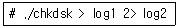
- 프로그램의 실행 결과는 log2 파일에 모두 기록 된다.
- 생성되는 파일은 log1, 2, log2가 된다.
- 프로그램 실행중 표준 출력은 log1 파일에, 표준 에러는 log2 파일에 기록된다.
- chkdsk를 실행하면 파일 log1의 내용을 log2로 전송한다.
(정답률: 66%)
9. 다음 파이프를 이용하여 실행한 명령에 대한 설명으로 알맞은 것은?
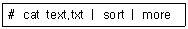
- 파일 text.txt를 라인 별로 정렬하여, 한 페이지를 출력하고 대기한다.
- 파일 text.txt 내용을 정렬하여 파일 more에 저장한다.
- 화면에 파일 text.txt의 전체 내용을 출력하고 끝낸다.
- 파일 text.txt 내용 중 한페이지에 해당하는 내용만 정렬하여 출력한다.
(정답률: 50%)
10. 다음은 숫자를 감소시키며 출력하는 쉘 프로그램이다. ( )안에 알맞은 것은?
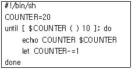
- -gt
- -lt
- >
- <
(정답률: 14%)
11. 다음 중 프로세스의 정의로 보기 어려운 것은?
- 실행 중인 작업
- 커널에 등록되고 커널 관리하에 있는 작업
- 실행 가능한 쉘 프로그램
- 각종 자원들을 요청하고 할당 받을 수 있는 개체
(정답률: 56%)
12. 다음 중 프로세스 스케줄링의 목적이 아닌 것은?
- 악성 프로그램의 실행 지연
- 프로세서 사용 시간 할당
- 평균 응답 시간의 극소화
- 성능에 대한 예측성 제공
(정답률: 60%)
13. 다음 프로세스 간의 통신 수단으로써 일반적으로 사용되는 시그널의 이름과 그 역할에 대한 설명 중 틀린 것은?
- HUP : Hangup의 약자로 실행종료, 로그아웃 하거나 모뎀 접속을 끊을 때 사용된다.
- INT : Interrupt의 약자로 실행종료, CTRL+c를 쳤을 때 보내진다.
- STOP : 무조건적으로 그리고 즉각적으로 정지 한다.
- TERM : Terminate의 약자로 무조건 종료한다.
(정답률: 40%)
14. 다음 중 일반적인 /usr 디렉토리와 관련된 설명으로 틀린 것은?
- /usr 디렉토리는 시스템이 정상적으로 가동되는데 필요한 명령이며 라이브러리 등이 있다.
- /usr/bin 디렉토리에는 /bin 디렉토리에 있는 파일이 복사되어 있다.
- /usr/include 디렉토리에는 C언어 헤더 파일들이 보관되어 있다.
- /usr/man 디렉토리에는 명령어로 볼 수 있는 man 페이지를 포함하고 있다.
(정답률: 29%)
15. 다음 중 리눅스 부트 매니저에 대한 설명으로 틀린 것은?
- LILO, GRUB 등이 대표적인 부트로더이다.
- 부트로더는 MBR(Master Boot Record)에 위치 한다.
- 다중 운영체제를 선택하여 부팅할 수 있게 해 준다.
- 보안기능은 포함하지 않는다.
(정답률: 74%)
16. 비동기식 전송에 대한 설명으로 알맞은 것은?
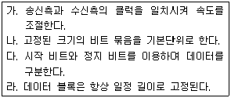
- 가
- 나, 다
- 다, 라
- 가, 라
(정답률: 72%)
17. 다음 중 라우터의 역할로 알맞은 것은?
- 장거리 전송시 전기적 신호의 증폭을 담당한다.
- 이더넷과 토큰 링을 연결할 때 사용한다.
- 패킷의 경로를 설정하여 통신량 분산을 수행 할 수 있다.
- 주로 응용 계층에서 동작한다.
(정답률: 52%)
18. 이더넷에서 주로 사용하는 버스 토폴로지에 대한 설명으로 틀린 것은?
- 하나의 기간 선을 분기하여 컴퓨터에 연결한다.
- 회선을 구성하기 편리하지만 많은 비용이 소요 된다.
- 전송전에 회선의 사용 여부를 확인해야 한다.
- 노드 증가시 회선 속도 저하가 발생한다.
(정답률: 45%)
19. 다음 설명 중 넷마스크의 역할로 알맞은 것은?
- 네트워크 주소와 호스트 주소를 구분하기 위해 사용된다.
- 네트워크 클래스 구분의 기준이 된다.
- 다중 전송을 위한 기본 주소를 지칭한다.
- 자기 자신을 가리키며 루프 백 주소로도 칭한다.
(정답률: 61%)
20. 다음 ping 명령의 결과를 해석한 내용 중 틀린 것은?
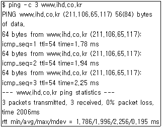
- 패킷 3개로 ping 테스트를 수행한 결과이다.
- 패킷 손실은 발생하지 않았다.
- 평균적인 응답 속도는 0.195 ms로 측정되었다.
- 최소 응답 시간은 1.786ms 이다.
(정답률: 63%)
2과목: 리눅스 시스템 관리
21. 장치 드라이버가 역방향 통신을 수행하기 위해 사용하는 것으로 알맞은 것은?
- IRQs
- DMA
- I/O
- PCI
(정답률: 34%)
22. 커널 모듈에 대한 설명으로 알맞은 것은?
- 마이크로 커널 구조에서 활용할 수 있는 구조이다.
- 커널 관련 명령어를 통해 모듈 적재를 수행할 수 있다.
- 커널 모듈로 동작되는 것은 장치 드라이버로 한정된다.
- 커널 모듈의 동작은 실제 커널보다 권한에 대한 제약이 발생한다.
(정답률: 49%)
23. /proc/interrupts 파일에 대한 설명으로 올바른 것은?
- XT-PIC 타입의 인터럽트 정보를 확인하기 위한 파일이다.
- 인터럽트 카운트를 볼 수 있다.
- USB 장치에 대한 인터럽트는 확인할 수 없다.
- 멀티프로세스인 경우에는 전체 프로세스에서 발생한 인터럽트 수를 합산한 정보만 볼 수 있다.
(정답률: 44%)
24. 다음 내용 중 DMA채널과 관련이 없는 것은?
- ISA 버스에 의해 사용된다.
- PCI 버스는 DMA 채널 할당이 필요없다.
- 인터럽트에 의해 DMA 채널이 구분된다.
- DMA 요구를 위해 고유 번호가 할당된다.
(정답률: 7%)
25. 다음 장치 설치와 관련된 내용 중 틀린 것은?
- 자원 데이터는 PC의 전원을 넣을 때마다 갱신 된다.
- /dev 디렉토리에 있는 파일들은 일반 파일처럼 동작한다.
- 인터럽트 번호는 장치들이 공유 할 수 없다.
- 장치와 CPU의 쌍방향 통신을 위해 IRQ가 존재 한다.
(정답률: 43%)
26. 다음 명령의 결과에 대한 내용 중 가장 알맞은 것은?
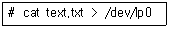
- text.txt 파일이 /dev/lp0 파일로 복사된다.
- 연결된 장치로 text.txt 파일의 내용이 출력된다.
- /dev/lp0 파일의 권한은 0666으로 추정된다.
- 간단한 비프 음이 울린다.
(정답률: 46%)
27. 다음 중 프린터 연결과 관련된 내용으로 알맞게 짝지어진 것은?
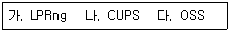
- 가
- 나, 다
- 가, 나
- 가, 나, 다
(정답률: 31%)
28. “여러 개의 하드 디스크에 있는 파티션을 묶어서 하나의 논리적인 드라이브를 사용할 수 있게 한다.” 다음에서 설명하는 내용으로 알맞은 것은?
- 블록 장치
- LVM
- MTD
- MCA
(정답률: 54%)
29. 다음은 특정한 파일에 대한 정보이다. 이에 대한 내용으로 알맞은 것은?
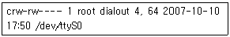
- 시리얼 포트와 관련된 장치 파일이다.
- 64바이트 크기의 블록 장치이다.
- 이 장치와 연결되면 DMA채널을 이용하여 통신 한다.
- 메모리에 접근하기 위한 장치 파일이다.
(정답률: 39%)
30. 모듈 유틸리티인 insmod에 대한 설명 중 틀린 것은?
- 각 커널 모듈의 의존성을 검사하여 순서대로 커널에 적재한다.
- 커널 모듈 파일을 직접 명시하여 커널에 적재 한다.
- 커널 모듈에 파라미터를 전달할 수 있다.
- 적재된 커널 모듈의 목록을 볼 수 있다.
(정답률: 13%)
31. 다음 중 시스템관리를 수행하는 슈퍼유저(super user)에 관한 설명으로 틀린 것은?
- 슈퍼 유저의 ID는 root 이다.
- 슈퍼 유저의 UID는 0 이다.
- 슈퍼유저는 시스템에 대한 강력한 권한과 기능을 수행한다.
- root에서 일반 사용자로 사용할 때는 chown이라는 명령어를 사용한다.
(정답률: 63%)
32. 다음 중 리눅스 시스템의 사용자 관리에 필요한 파일이 아닌 것은?
- /etc/group
- /etc/passwd
- /etc/shadow
- /etc/user
(정답률: 45%)
33. 다음에서 설명하는 쉘(SHELL)의 종류로 알맞은 것은?
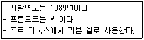
- sh
- csh
- ksh
- bash
(정답률: 61%)
34. 다음 사용자를 추가하는 명령어에 대한 각각의 설명으로 알맞은 것은?
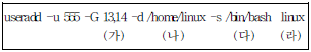
- (가)의 13,14는 사용자의 그룹(GID)이다.
- (나)의 /home/linux은 사용자의 기본 쉘의 지정이다.
- (다)의 /bin/bash은 사용자 홈디렉토리의 지정이다.
- (라)의 linux는 사용자의 UID 이다.
(정답률: 55%)
35. 다음 리눅스 사용자 관리를 위한 명령어 중 사용자의 정보를 변경하기 위한 명령어로 알맞은 것은?
- useradd
- userdel
- usermod
- userupdate
(정답률: 55%)
36. 다음은 리눅스의 명령어 ‘ls -l a.txt'를 수행한 결과이다. 이에 대한 설명으로 틀린 것은?
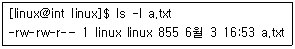
- 파일의 소유자는 linux 이다.
- 파일의 소유자는 이 파일을 읽기만 가능하다.
- 이 파일의 사용자, 그룹에 해당되지 않는 사용자는 읽기만 가능하다.
- 파일의 그룹은 linux 이며 읽기와 쓰기가 가능 하다.
(정답률: 60%)
37. 리눅스 파일시스템에 관한 설명 중 틀린 것은?
- 파일의 종류에는 디렉토리, 일반 파일, 특수 파일이 있다.
- 디렉토리는 트리구조의 계층적 구조를 가진다.
- 일반 파일은 보통 평상시에 사용하는 파일을 말한다.
- 특수파일은 디스크에 저장되어 있으며 보통 파일을 포함하고 있다.
(정답률: 68%)
38. 리눅스 파일시스템의 복구 할 수 없는 문제에 대비하기 위한 방안으로 관련이 가장 없는 것은?
- 부트/루트 응급 복구 디스크를 만든다.
- 부트로더(LILO나 GRUB 등) 응급 복구 디스크를 만든다.
- 리눅스 시스템 설치 디스크를 준비한다.
- 중요한 파일에 대해 백업을 한다.
(정답률: 52%)
39. 다음은 파일에 대한 현재의 허가권이다. 파일의 소유자에게만 실행모드를 추가 하고자할 때 이를 위한 명령어로 틀린 것은?
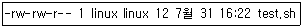
- chmod u+x test.sh
- chmod 764 test.sh
- chmod a+x test.sh
- chmod u=rwx,g=rw,o=r test.sh
(정답률: 50%)
40. 리눅스 파일시스템 관련 명령어에 대한 설명으로 틀린 것은?
- mount : CD-ROM을 특정 디렉토리에 연결 시킬 때 사용할 수 있다.
- mkfs : 파일시스템의 상태를 점검하기 위한 명령어이다.
- quota : 시스템 사용자에게 일정량의 디스크 사용 용량을 제한 하기 위한 명령어이다.
- fdisk : 리눅스의 파티션 분할 명령어이다.
(정답률: 52%)
41. 프로세스에 관한 설명으로 틀린 것은?
- 프로세스란 실행중인 프로그램을 말한다.
- 프로세스의 실행 레벨은 0,1,2,3,4,5,6이 있다.
- 포그라운드 프로세스는 터미널에 직접 연결되어 입출력을 주고받는 프로세스이다.
- 프로세스를 종료하기 위해서는 end() 라는 시스템 호출을 수행한다.
(정답률: 59%)
42. 리눅스 시스템의 프로세스 레벨에 대한 설명으로 알맞은 것은?
- 실행레벨 1 : 단일 사용자 모드
- 실행레벨 2 : 셧다운(shutdown) 절차에 대한 책임을 진다.
- 실행레벨 3 : 재실행 모드
- 실행레벨 4 : 다중 사용자 모드
(정답률: 40%)
43. 다음에서 설명하는 명령어로 알맞은 것은?
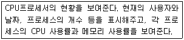
- kill
- ps
- signal
- top
(정답률: 61%)
44. 다음에서 설명하는 명령어로 알맞은 것은?
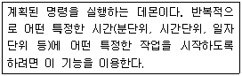
- cron
- exec
- fork
- nice
(정답률: 64%)
45. 다음은 ps 명령 실행 후 결과의 일부이다. 결과에 대한 설명으로 알맞는 것은?
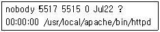
- 프로세스의 주인은 root 이다.
- 프로세스의 번호(PID)는 5515 이다.
- 부프로세서(PPID)는 5517 이다.
- 프로세스의 실제 파일은 /usr/local/apache/bin/httpd 이다.
(정답률: 59%)
46. 패키지를 통한 소프트웨어를 설치하기 위해 rpm을 사용할 경우 옵션의 설명으로 옳은 것은?
- -i : 패키지를 설치
- -e : 설치된 패키지에 질문
- -q : 설치된 패키지 검토
- -V : 설치된 패키지의 삭제
(정답률: 58%)
47. 패키지 형태의 소프트웨어를 설치하기 위한 rpm과 dpkg의 설명으로 틀린 것은?
- 소프트웨어를 설치, 삭제, 업그레이드 할 수 있다.
- rpm은 데비안 패키지 시스템의 발판 역할을 한다.
- 패키지의 확장자는 *.rpm, *.deb 이다.
- 윈도즈에서의 setup, install과 유사하다.
(정답률: 29%)
48. 다음 중 make에 대한 설명으로 틀린 것은?
- 프로젝트를 효율적으로 관리하기 위해 사용한다.
- Makefile 이라는 형식을 사용한다.
- 컴파일된 배포판 패키지를 설치하기 위해 사용 한다.
- make all, make install 등으로 사용한다.
(정답률: 19%)
49. gcc를 이용해서 main.c와 sub.c를 컴파일해서 ihd 라는 실행 파일을 만들려고 한다. 실행 해야될 명령어로 틀린 것은?
- gcc -c main.c
- gcc -c sub.c
- gcc -c ihd main.c sub.c
- gcc -o ihd main.o sub.o
(정답률: 34%)
50. 다음 중 ihd.txt를 압축하기 위한 명령어로 알맞은 것은?
- gzip ihd.txt
- gzip -d ihd.txt
- gzip -h ihd.txt
- gzip -v ihd.txt
(정답률: 29%)
51. 다음 중 기본적인 로그 파일의 연결이 틀린 것은?
- /var/log/messages : 시스템 로그
- /var/log/secure : 보안로그
- /var/log/boot.log : 부팅 로그
- /var/log/error_log : 웹 접속 로그
(정답률: 67%)
52. 다음 중 시스템 로그 모리터링과 관련 없는 것은?
- /sbin/syslogd : 로그 데몬 프로그램
- /etc/syslog.conf : 로그 데몬 설정 파일
- /etc/rc.d/init.d/syslog restart : 로그 데몬의 시작
- /var/run/syslogd.pid : 로그 데몬의 PID
(정답률: 26%)
53. 다음 로그 파일 중 시스템에 로그인과 로그아웃 히스토리 정보를 가지고 있는 파일로 알맞은 것은?
- /var/log/cron
- /var/log/wtmp
- /var/log/dmesg
- /var/log/maillog
(정답률: 52%)
54. 다음 중 시스템 보안 관리의 사용자 접근 보안을 위한 대책으로 적절치 않은 것은?
- 부팅시 패스워드를 사용한다.
- BIOS에서 플로피 부트 옵션을 사용하지 않는다.
- 로컬 사용자에게는 모든 접근을 허용한다.
- xlock을 사용하여 X윈도우 화면을 잠근다.
(정답률: 55%)
55. 루트의 권한으로 작업 할 때 치명적인 실수를 방지하기 위한 내용으로 가장 적절치 않은 것은?
- 와일드카드(*)를 사용하는 명령에 주의한다.
- rm 명령어를 사용할 때 확인 옵션을 사용한다.
- 루트용 패스(PATH)에 ‘.’(dot)을 포함하지 않는다.
- 원격작업이 가능 하도록 rsh, rlogin을 사용한다.
(정답률: 57%)
56. SSH(Secure SHell)에 대한 설명으로 가장 절적하지 않은 것은?
- 네트워크의 다른 시스템에 로그인 할 수 있다.
- 두 호스트간에 통신을 암호화 한다.
- telnet과 비교하여 스니핑되면 쉽게 패킷이 노출 된다.
- 사용자 인증을 위하여 공개키 암호 기법을 사용 한다.
(정답률: 58%)
57. 다음 중 시스템 보안 관리 관련 명령어가 아닌 것은?
- su
- ssh
- pam
- cops
(정답률: 22%)
58. 다음 중 시스템 백업정책에 대한 설명으로 알맞은 것은?
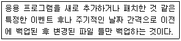
- 데이제로백업(A Day-zero Backup)
- 풀백업(A Full Backup)
- 변경분 백업(An Incremental Backup)
- 원격백업(A Remote Backup)
(정답률: 64%)
59. 다음의 cpio 명령어를 이용하여 디스크로부터 보관파일로 복사 하도록 하기위한 옵션은?
- -d
- -i
- -o
- -v
(정답률: 31%)
60. 다음 중 시스템 백업을 수행하기 위한 명령어가 아닌 것은?
- cpio
- dump
- mv
- tar
(정답률: 56%)
3과목: 네트워크 및 서비스의 활용
61. 웹서비스의 단점인 일방적인 게시가 아닌 사용자와의 양방향의 대화를 가능하기 위해서 외부의 프로그램을 실행시켜 그 결과를 HTML로 돌려 주는 방식인 CGI(Common Gateway Interface)에 대한 내용 중 틀린 것은?
- CGI는 어떠한 언어로도 코딩될 수 있다.
- CGI 프로토콜은 단순하여 사용하기가 간단하다.
- CGI 스크립트의 작성에 최근 많이 사용되는 언어는 C/Basic/Cobol/Fortran 등이 있다.
- 프로세스 생성과 초기화에 상당한 시간이 필요하다는 단점이 있다.
(정답률: 18%)
62. 최근 웹서비스에서 많이 사용되고 있는 웹 스크립트 언어인 JSP에 대한 설명으로 적절하지 않는 것은?
- 플랫폼에 독립적이므로 한번 작성한 코드로 어떤 OS에서든 사용가능하다.
- 공통 모듈을 정의하여 재사용하므로 로직 분리로 컴포넌트 재사용이 가능하다.
- 커스텀 태그, JSTL, 스트럿츠 프레임 워크를 이용한 사용자정의 태그의 사용이 가능하기 때문에 개발이 용이하다.
- 요청마다 컴파일하기 때문에 매번 메모리에 프로세스(인스턴스)를 생성하여 자원활용이 비효율적이다.
(정답률: 66%)
63. 초기의 웹 서비스는 주로 건조한 텍스트와 최소한의 이미지를 바탕으로 작성되는 HTML(Hyper Text Markup Language) 페이지를 바탕으로 구성되었다. 이 HTML에 대한 설명으로 틀린 것은?
- 기존의 telnet, ftp, gopher 등에 비해 사용상의 편리함이 월등하다.
- HTML에 대한 표준 관리는 W3C 컨소시엄에서 주관하고 있다.
- 현재까지 HTML의 최신 버전은 1.1 이다.
- 정적인 HTML의 한계를 개선, 확장하기 위하여 CGI가 사용되고 있다.
(정답률: 39%)
64. 아파치 웹서버를 /usr/local/apache를 기본디렉토리로 소스컴파일하여 설치하였다. 설치 후 기본 디렉토리에 생성되는 관련 디렉토리에 대한 설명 으로 틀린 것은?
- sbin - 아파치 웹서버 운영 시 필요한 시스템 유틸리티들이 들어있다.
- conf - 아파치 웹서버의 설정 파일들이 들어 있다.
- bin - 아파치 웹서버 운영 시 필요한 유틸리티들이 들어있다.
- logs - 아파치 서버 사용 시 발생하는 여러 가지 로그들이 들어있다.
(정답률: 29%)
65. MySQL을 설치, 운영 중인데 MySQL의 관리자 root의 비밀번호를 잃어버렸을 경우 DB에 권한 없이 구동하여 들어가서 비밀번호를 재설정하여야 한다. 다음 중 권한없이 MySQL을 구동시키는 방법은 무엇인가?
- mysql_safe &
- safe_mysql &
- safe_mysqld --skip-nogrant &
- safe_mysqld --skip-grant &
(정답률: 44%)
66. 리눅스의 대표적인 DBMS인 MySQL을 컴파일하여 설치하려고 한다. 컴파일 설치의 첫 번째 단계인 설정단계에서 사용자 DB 저장경로를 설정하는 옵션은 다음 중 무엇인가?
- --localstatedir
- --prefix
- --sysconfdir
- --with-charset
(정답률: 18%)
67. 아파치 웹서버 실행 프로그램인 httpd의 옵션으로 틀린 것은?
- -f : 웹서버 아파치의 환경설정파일 지정
- -d : 웹서버 아파치의 웹문서 디렉토리 지정
- -v : 웹서버 아파치의 버전 표시
- -V : 웹서버 아파치의 가상서버 표시
(정답률: 4%)
68. 웹서버 아파치는 IP기반, 이름기반 등의 가상호스트를 지원한다. 가상호스트 사용을 위해 <VirtualHost> 설정에서 사용할 수 없는 지시자는 무엇인가?
- ServerAdmin
- ServerName
- ServerRoot
- DocumentRoot
(정답률: 19%)
69. 삼바 서버의 환경 설정 파일인 smb.conf의 Global Settings에서 설정하는 것이 아닌 것은?
- workgroup
- server string
- load printers
- share path
(정답률: 14%)
70. 삼바서버는 클라이언트가 접속 요청 시 서버의 인증레벨을 확인하여 인증을 처리한다. 사용자가 요청한 자원을 연결해 주기 전에 서버에 로그온 하기 위한 사용자/비밀번호 인증을 거치지 않는 인증레벨로 알맞은 것은?
- share
- user
- server
- domain
(정답률: 47%)
71. 클라이언트의 관리자 root가 공유된 NFS 서버로 접속하려할 때 내부보안정책에 의해 NFS서버의 root권한을 얻지 못하도록 설정하기 위해서 아래 설정파일의 ( )안에 들어갈 내용과 접속시 어떤 사용자 권한을 가지게 되는지 맞게 짝지어진 것은?
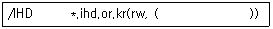
- root_squash, nobody
- root_no_squash, nobody
- user_squash, nobody
- user_no_squash, nobody
(정답률: 37%)
72. NFS서버에서 export한 영역을 매번 수동으로 마운트하여 사용 중에 있다. 부팅 시 자동으로 마운트되도록 클라이언트 /etc/fstab을 변경하려고 할 때 설정 중 틀린 것은
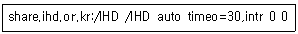
- share.ihd.or.kr:/IHD
- /IHD
- auto
- timeo=30,intr
(정답률: 14%)
73. NFS 서버 및 클라이언트에서 제공하는 응용프로그램으로 틀린 것은?
- showmount
- rpc.mountd
- rpc.nfsd
- shownfs
(정답률: 33%)
74. 다음 Proftpd의 설정파일인 proftpd.conf 파일에 대한 설명 중 틀린 것은?
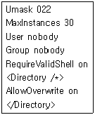
- Umask는 새로 만들어지는 파일과 디렉토리에 적용될 마스크값을 지정한다.
- ProFTP 서버가 Standalone일 때 최대 접속 가능한 사용자 수를 지정한다.
- User는 ProFTP 서버에 접속 가능한 사용자를 지정한다.
- RequireValidShell은 /etc/shells 파일에 정의되지 않을 쉘을 사용하는 사용자에게 FTP 접속을 허가 또는 거절하는 것에 대한 지정이다.
(정답률: 20%)
75. Limit는 command 부분에 하나 또는 둘 이상의 FTP 명령어들을 사용하는 것을 제한하기 위하여 사용된다. 다음 중 사용가능한 command와 그에 대한 설명이 틀리게 연결된 것은?
- MKD - 새로운 디렉토리를 생성할 경우
- RNFR - 디렉토리의 이름을 바꿀 경우
- STOR - 클라이언트가 서버로 파일을 전송할 경우
- RETR - 클라이언트가 서버에 파일을 전송할 경우 재시도 여부
(정답률: 18%)
76. 사용자 A가 사용자 B에게 메일을 보내려고 한다. 프로토콜의 포트번호를 순서대로 바르게 나열한것은?(순서대로 ㉮ ㉯)
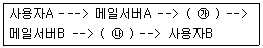
- 25, 110
- 110, 110
- 25, 25
- 110, 25
(정답률: 57%)
77. 다음에서 설명하는 내용과 관련이 있는 것은 무엇인가?
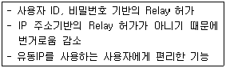
- 동적 릴레이
- 정적 릴레이
- IP기반 릴레이
- 이름기반 릴레이
(정답률: 44%)
78. 최근 sendmail은 로컬호스트를 제외하고 원격 클라이언트로 부터의 임의의 릴레이를 막기 위하여 기본설정이 되어있다. 다음 보기 중 원격 클라이언트로 부터의 요청을 처리해줄 수 있는 설정은 무엇인가?
- O DaemonPortOptions=Port=smtp,Addr=127.0.0.1, Name=MUA
- O DaemonPortOptions=Port=smtp,Addr=127.0.0.1, Name=MTA
- O DaemonPortOptions=Port=smtp,Addr=0.0.0.0, Name=MUA
- O DaemonPortOptions=Port=smtp,Addr=0.0.0.0, Name=MTA
(정답률: 23%)
79. 다음은 외부로부터의 각종 접근 설정이 저장되는 파일인 /etc/mail/access 파일의 예제이다. 10.0.0 대역의 릴레이 요청을 거부하도록 설정을 변경 하였을 경우 메일서버에 적용하기 위한 관리자의 작업으로 알맞은 것은?
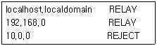
- /usr/sbin/makemap hash access < access
- /usr/sbin/sendmail hash access < access
- /usr/sbin/makehash map access < access
- /usr/sbin/hash access < access
(정답률: 41%)
80. sendmail에서 제공하는 스팸 메일 차단 옵션에 대한 설명 중 틀린 것은?
- OK - 지정된 호스트나 사용자에게서 무조건 메일 수신
- DISCARD - 지정된 도메인에게서 메일을 받아 모두 폐기
- 501 - 발신자 주소에 호스트 이름이 없을 경우 메일 수신 거부
- 550 - 지정된 도메인과 관련된 모든 메일 수신 거부
(정답률: 26%)
81. 슈퍼데몬 xinetd는 침입에 대하여 우수한 보안을 제공하며, DoS(서비스 거부)공격의 위험을 감소 시키는 기능을 제공하고 있다. 클라이언트의 접근 제한이 가능하도록 TCP Wrapper기능을 지원할 수 있도록 xinetd를 컴파일 설치하려고 할 때 사용하는 옵션으로 알맞은 것은?
- --with-libwrap
- --with-tcpwrap
- --tcp-wrap
- --with-loadavg
(정답률: 10%)
82. 일반적으로 xinetd의 설정 속성에서 지원하는 포트번호는 잘 알려진 서비스의 경우 대부분 설정에서 생략한다. 이렇게 생략된 포트번호가 명시된 설정파일로 알맞은 것은?
- /etc/protocols
- /etc/services
- /etc/portnums
- /etc/networks
(정답률: 49%)
83. 다음의 xinetd 설정 속성 중 접속 제한 시간을 설정할 수 있는 것은 무엇인가?
- instance
- redirect
- only_from
- access_times
(정답률: 57%)
84. DNS 시스템은 분산된 계층적인 DB구조를 가지고 있는데 각각의 DB역할을 하는 영역(zone)파일을 생성하기 위해 사용되는 RR(Resource Record)에 대한 설명 중 틀린 것은?
- A(address) - IP주소를 호스트명으로 변환
- MX(mail exchanger) - 메일 서버 지정
- SOA(start of authority) - zone의 전체 설정으로 반드시 첫 번째 지정
- NS(name server) - 네임서버 주소
(정답률: 34%)
85. DNS 서버의 종류에 해당하지 않는 것은?
- master server
- slave server
- caching server
- sub server
(정답률: 43%)
86. 다음 named.conf 설정에 대한 설명 중 틀린 것은?
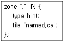
- "."은 네임서버 자신을 의미한다.
- "IN"은 Internet을 의미하는 RR(Resource Record)이다.
- "type"은 hint, master, slave로 설정할 수 있다.
- "file"은 zone 파일이 참고하는 위치를 나타낸다.
(정답률: 22%)
87. 프록시(Proxy) 서버에 대한 설명으로 틀린 것은?
- 원뜻은 대리인을 의미하며, 웹 서비스의 속도를 보완하는 방법
- 방문했던 사이트의 데이터를 캐시하여 재접속 시 캐시된 데이터를 전달 후 삭제
- 리눅스의 대표적인 캐시서버는 squid 프록시 서버
- 보관된 내용을 재전송해줌으로써 외부의 대역 폭을 절감하는 효과
(정답률: 35%)
88. 다음 환경설정에 대한 설명으로 틀린 것은?
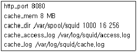
- http_port 8080 - 클라이언트의 접근 포트 설정
- cache_mem 8 MB - 최대 캐시 메모리 크기
- cache_dir /var/spool/squid 1000 16 256 - 캐시 디렉토리에 대한 설정(1000은 최대 캐시 개수)
- cache_access_log /var/log/squid/access.log - 캐시 서버 접근로그 저장파일 지정
(정답률: 65%)
89. NIS(Network Information System)에서 가장 중요하고, 서비스 요청을 대비하여 항상 구동중이어야 하는 프로그램은 어느 것인가?
- ypbind
- ypswitch
- ypcat
- ypmatch
(정답률: 46%)
90. 다음 보기 중 NIS의 동작구조에 대한 설명으로 틀린 것은?
- NIS 데이터베이스들은 makedbm을 통해서 ASCII에서 DBM포맷으로 번역된다.
- 네트워크 상에는 2개 이상의 NIS 슬레이브 서버가 중복해서 존재할 수 없다.
- NIS서버는 ASCII 데이터베이스와 DBM 데이터베이스를 동시에 가지고 있어야 한다.
- NIS 슬레이브 서버는 NIS 맵을 통해 변경 사항을 알 수 있다.
(정답률: 36%)
91. ARP는 내부로 들어온 데이터의 목적지 주소를 IP 주소에서 MAC주소로 변환한 다음 기억하고 있는 것을 말한다. 다음 중 리눅스에서 사용되는 arp 명령어의 옵션에 대한 설명이 틀린 것은?
- -a : 캐시에 있는 특정된 또는 모든 호스트를 나열
- -n : 32bit로 된 IP, 즉 풀이(resolving)를 하지 않고 IP로 보여줌
- -d : 지정한 장치의 arp를 보여줌
- -v : 동적인 모드로 보여줌
(정답률: 15%)
92. 다음 중 케이블 모뎀 사용자들이 많이 사용하고 있는 동적 IP주소 할당 서비스는 어떤 서비스인가?
- SMB
- DNS
- NIS
- DHCP
(정답률: 63%)
93. 다음은 DHCP 클라이언트의 로컬 DNS인 /etc/resolv.conf이다. 이와 관련된 DHCP 서버의 dhcpd.conf 옵션으로 알맞은 것은?
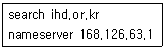
- routers, range
- subnet, netmask
- subnet-mask, broadcast-address
- domain-name-servers, domain-name
(정답률: 60%)
94. 개발 프로젝트를 CVS를 이용하여 진행하려고 한다. 프로젝트 수행 절차의 순서가 알맞은 것은?
- 저장소 초기화 -> 프로젝트 초기화 -> 작업 공간 마련 -> 프로젝트 작업
- 저장소 초기화 -> 작업공간 마련 -> 프로젝트 초기화 -> 프로젝트 작업
- 프로젝트 초기화 -> 저장소 초기화 -> 작업 공간 마련 -> 프로젝트 작업
- 프로젝트 초기화 -> 작업공간 마련 -> 저장소 초기화 -> 프로젝트 작업
(정답률: 40%)
95. 다음 중 CVS의 명령으로 틀린 것은?
- init
- import
- checkout
- commit
(정답률: 21%)
96. 백도어는 시스템 설계자나 관리자에 의해 고의로 남겨진 시스템의 보안 허점으로 응용프로그램이나 운영체제에 삽입된 프로그램 코드이다. 다음 중 백도어의 종류에 해당하지 않는 것은?
- 체크섬과 타임스탬프 백도어
- DDoS 백도어
- 커널 백도어
- 파일시스템 백도어
(정답률: 27%)
97. 다음에서 설명하는 내용으로 알맞은 것은?
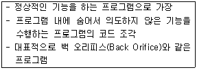
- 트로이 목마
- 공버퍼 오버플로
- DDoS
- 웜 바이러스
(정답률: 40%)
98. 다음은 내부자에 의한 공격 중 하나인 임의의 파일을 만들어 크기를 증가시키는 소스이다. 이것은 어떤 공격을 위한 것인가?
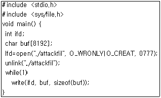
- 메모리 고갈
- 프로세스 만들기
- 디스크 채우기
- 루트킷
(정답률: 41%)
99. 커널 수준에서 패킷필터기능을 가지고 있는 iptables 에서 아래 조건을 만족하기 위한 설정으로 알맞은 것은?
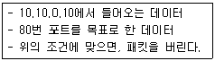
- iptables -t filter -A INPUT -s 10.10.0.10 -j DROP
- iptables -t filter -A INPUT -d 10.10.0.10 -j DROP
- iptables -t filter -A INPUT -s 10.10.0.10 --destination-port 80 -j DROP
- iptables -t filter -A INPUT -d 10.10.0.10 --destination-port 80 -j DROP
(정답률: 32%)
100. 다음 중 보안에 중요한 허가권한인 SetUID와 SetGID가 설정된 파일을 찾는 방법으로 알맞은 것은?
- find / -nouser -o -nogroup -print
- find / -perm -2 -print
- find / -type f (-perm -04000 -o -perm -02000)
- find / -type f -empty
(정답률: 38%)